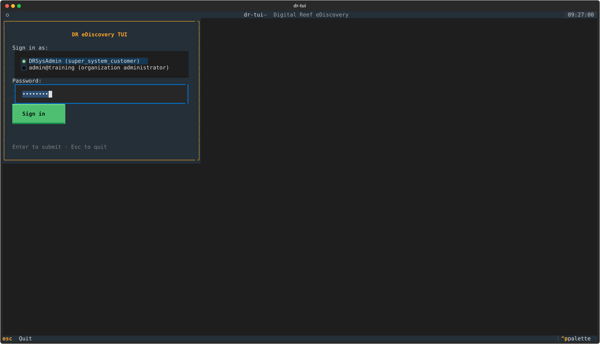
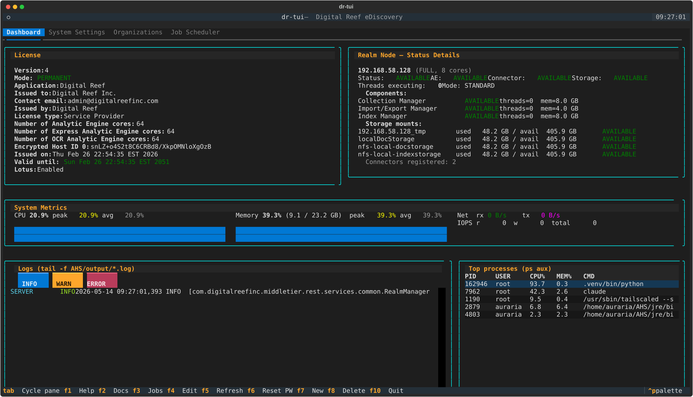
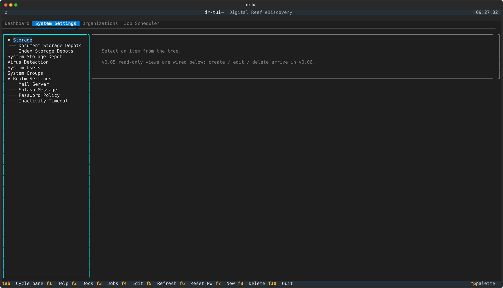
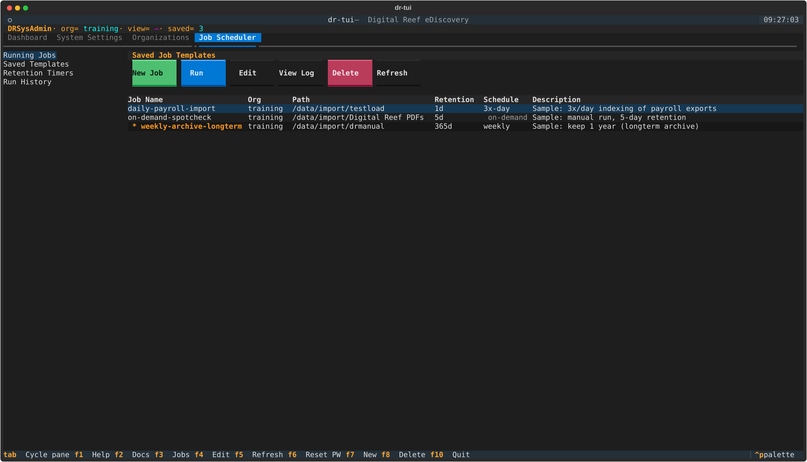
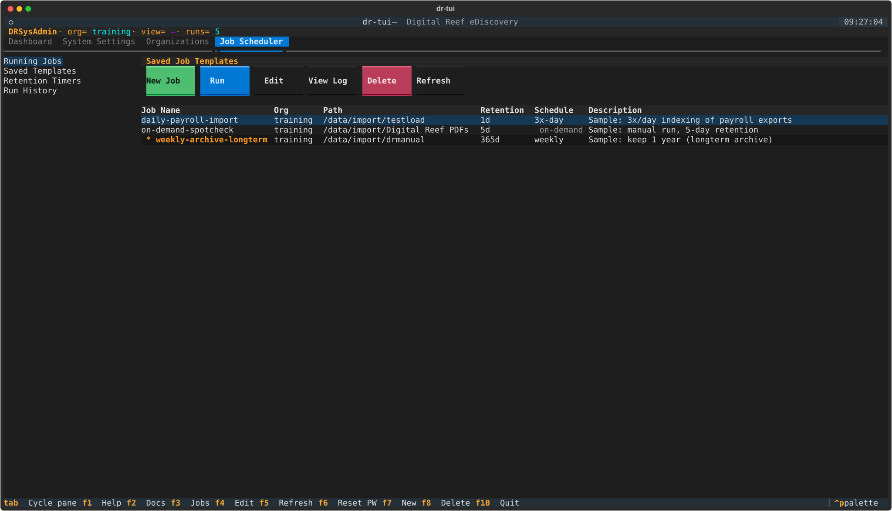
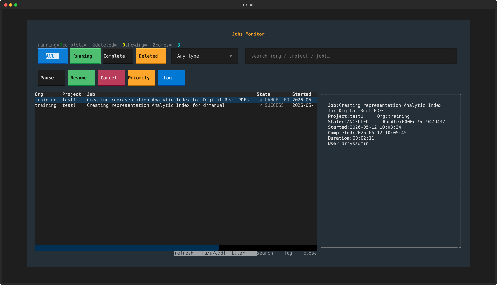
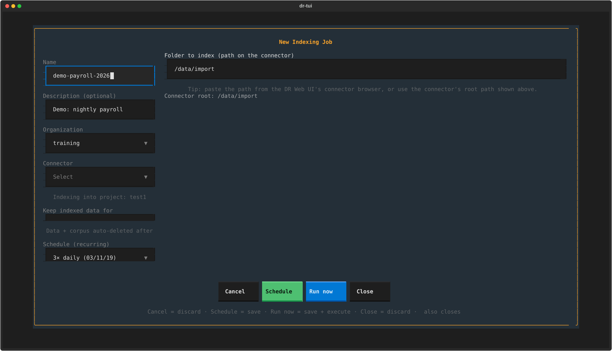

Seven screenshots taken by the
Textual Pilot harness
against the live DR install (192.168.58.128). Each SVG
is a faithful render of what your terminal sees — open them directly
to inspect the pixel-perfect output.

DR sysadmin or organization admin. Cleaner-than-default Textual login dialog; focused field highlighted in cyan.
password.
Five live panels: license + nodes (REST, 30s refresh); system metrics with sparklines (psutil, 2s); streaming AHS log with INFO/WARN/ERROR filters (1s file poll); top 5 procs (3s).

Hierarchical tree with two write-paths: Storage depots, Virus Detection, System Users / Groups, and the v0.08+ Realm Settings (mail / splash / password policy / inactivity).

Three demo templates seeded. Note the
* weekly-archive-longterm row — the bold asterisk
prefix is the v0.15 accessibility cue for "longterm"-named jobs,
visible to colour-blind users regardless of the yellow tint.
3x-day, weekly)
or on-demand in dim text when no recurrence.

Each status cell carries a leading UTF-8 glyph in addition to its colour: ▶ RUNNING, ✓ SUCCESS, ✗ FAILURE, ⊘ DELETED/CANCELLED, ‖ PAUSED. v0.15.1 TICKET-2 fix.

Single realmManager/listRealmTasks
call (v0.11 — replaces the per-project fan-out). Filter buttons
All/Running/Completed/Deleted, operation-type Select populated
from listOperationTypes, action row for
Pause/Resume/Cancel/Priority/Log. L opens the AE
live-log viewer.

v0.15 layout: form fields left
(Name/Description/Organization/Connector/Retention/Schedule),
Path Input right. The file-tree browser was dropped in v0.15 in
favour of a path Input — matches the proven
locustfile_indexing.py pattern and sidesteps DR
5.5.3.2's permission gates on exploreConnector.
Beyond the TUI, dr-tools v0.15.1 ships three CLIs. Run any of these from a shell on the lab host:
$ dr-tui # the TUI we just toured $ dr-load preflight # env health-check $ dr-load indexing --users 5 --duration 300s # Locust load test $ dr-job-run nightly-payroll # same code path as TUI's Run Now $ dr-job-delete nightly-payroll 20260514T030000 # manual retention expire $ systemctl --user list-timers --all | grep dr-tools NEXT LEFT UNIT ACTIVATES Thu 2026-05-15 03:00:00 EDT 18h left dr-tools-recur-nightly-payroll.timer dr-tools-recur-nightly-payroll.service Wed 2026-05-21 02:00:00 EDT 6 days left dr-tools-retention-nightly-payroll-20260514T030000.timer dr-tools-retention-...service
~/.dr-tools/ ├── jobs/ │ ├── daily-payroll-import.json # saved JobDefinition template │ ├── on-demand-spotcheck.json │ └── weekly-archive-longterm.json ├── runs/ │ ├── daily-payroll-import.jsonl # append-only run history │ └── ... └── logs/ └── daily-payroll-import-20260513T030000.log # tee'd run output ~/.config/systemd/user/ ├── dr-tools-recur-daily-payroll-import.{service,timer} # 3x/day ├── dr-tools-recur-weekly-archive-longterm.{service,timer} # weekly └── dr-tools-retention-*-{run_id}.{service,timer} # per-run cleanup
exploreConnector permission
to any role by default). Added recurring schedules via systemd
user timers with 8 presets.▶ ✓ ✗ ⊘ ‖
glyph prefixes on every status cell (colour-blind accessibility);
actionable empty-project hint that names the missing permission.